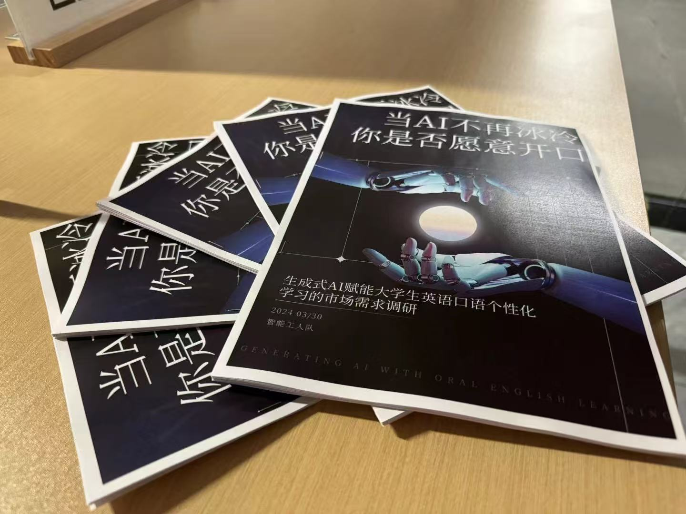
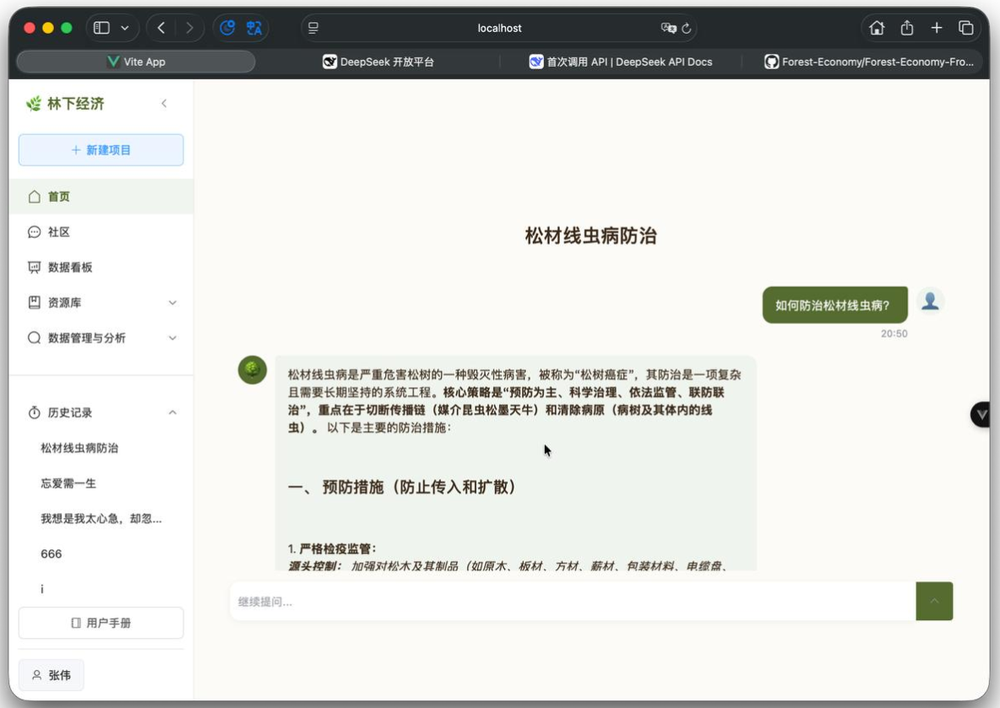

深圳大学 · 计算机科学与技术（本科）
2023.09 - 2027.06
课程采用“分组折叠 + 气泡标签”结构，后续可持续扩展。
2023.09 - 2027.06
默认仅显示标题，点击展开详情；关键词统一使用气泡标签。

项目地址： https://github.com/lovvvvvve-Haibara/Forest-Economy-PublicVersion.git

在“百千万工程”与乡村振兴战略背景下，团队前往云南省文山州马关县八寨镇开展实地调研， 通过政府座谈、企业走访与农户访谈等方式，系统梳理林下经济产业的发展模式、现实困境与发展潜力。 调研发现，当地依托丰富的森林资源形成以砂仁等中药材为代表的林下特色产业，在带动农民增收、促进产业振兴方面成效显著， 但在产业信息管理、技术推广与政策传播等方面仍有提升空间。
团队结合计算机与人工智能技术背景，提出利用数字化工具提升农业信息服务效率、促进农业技术传播与产业数据管理的思路， 为地方政府与相关机构推动林下经济高质量发展提供参考建议。

基于房屋属性数据集构建房价预测模型。项目首先完成探索性数据分析（EDA），覆盖数据规模、特征类型、缺失值分布与特征相关性； 随后通过异常值检测、缺失值填充、特征类型转换、独热编码、特征归一化等特征工程步骤提升训练质量。
在建模阶段实现并比较 Lasso Regression、ElasticNet、Gradient Boosting、XGBoost、LightGBM、Kernel Ridge Regression 等回归模型， 采用 K-Fold 交叉验证评估性能。最终通过 Stacking Ensemble 融合多模型预测结果，进一步提升准确性与稳定性。
连接： https://www.kaggle.com/code/jonasexcepy/fork-v3-6-2385b9
Long-sequence time-series forecasting (LSTF) remains challenging due to long-range dependencies, non-stationarity, noise, and error accumulation. This survey summarizes attention-based methods, multi-resolution/frequency modeling, graph-based dependencies, and foundation-model paradigms.
文档： Survey of long sequence time-series forecasting by deep learning.pdf
基于语义保持自然改写，对欺诈对话检测模型鲁棒性开展系统分析。引入 ABP 框架构建同义词替换型对抗样本， 对比模型在原始数据与改写数据上的性能差异，验证模型对表达变化的敏感性并讨论鲁棒性增强路径。
产品能力、工程能力与 AI 能力一体化。
Product × Engineering × AI
从用户洞察到方案定义，形成可执行的产品闭环。
具备多栈开发能力，支持产品从方案到落地交付。
兼顾 AI 功能设计与技术实现，强化系统协同效率。
时间 / 奖项 / 等级
欢迎联系交流 AI 产品、用户研究与技术落地。
Email: 1033098392@qq.com
Phone: 13529187049